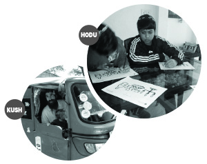

From Hodu Till Kush
Twin sisters, shluchos from the day they were born, have ended up with one in Hodu-India and one in Kush-Ethiopia, and not just for Purim! * Shlichus stories of Chaya Mushka Sudry and Devorah Leah Chaviv, of the Gromach family of Beit Dagan. * Shlichus which entails going completely out of that which is familiar and comfortable, in order to transform the world.

In Ethiopia there are also opposites. Ethiopia is a country where people rent apartments for thousands of dollars a month, but are unwilling to sell a hundred eggs “because this is all I have.” The country is sizable (27th in the world) but it is hard to find a home with a kitchen of reasonable size. There are embassies from nearly every country, but only one shul. This is where R’ Eliyahu and Devorah Leah Chaviv have opened a Chabad house, the first in the country.
SHLICHUS FROM BIRTH
“Beit Dagan,” says Devorah Leah, “is our home. A big house, which is not only the private home of my family, but of the entire yishuv. My parents went to this yishuv with the Rebbe’s blessings. My father presented a number of options and the Rebbe circled the yishuvim of Beit Dagan, Mishmar HaShiva and Kfar Ganot.
“The job of us girls was with the children. For example, every Friday, before candle lighting, about thirty girls gathered in the home of my parents, R’ Shmuel and Ruth Gromach. We would light together and recite Kabbalas Shabbos with songs and games. We also ran Tzivos Hashem activities on Wednesdays in a few areas of Beit Dagan.”
Then the two of them got married and Mushka went to Delhi, India
“Three months after we married. It wasn’t something we planned. R’ Shmulik Scharf asked us to replace them for three months. The Indian government allows Israelis a visa for only half a year. Every half a year, the shluchim have to leave India and stay away for a cooling period until they can submit a new request for a visa.
“We agreed to go. My husband was in Delhi for half a year as a bachur on shlichus, and that is why R’ Scharf asked us to go. As far as learning and work were concerned, it was a great time to go and as far as visas, we both have foreign passports so everything was quickly arranged. We also opened to an amazing letter from the Rebbe about being a role model and shlichus so we had no doubt.
“We had just two problems. The first, what would we do with the furniture and electronics that we had bought when we married. The second, I had never been to a place like India before. I grew up on shlichus since I was born. It’s not like Chabad house life is new to me, and most of my family had been in the East on shlichus. But still, when you yourself go and begin to work, it’s different than hearing stories about it.
“We resolved the first problem by selling our stuff. We saw that it would be cheaper to sell and buy again than to pay to store the contents of an apartment. The second problem I discovered only when I landed in Delhi and it’s a problem that only time can resolve.”
Devorah Leah went to Addis Ababa, Ethiopia:
“We went thanks to the Rebbe,” she laughs. “Before we married my husband was on shlichus in Hampi, India with my older brother, for half a year. One day, he got a phone call from a number that contained the digits 770. He was sure it was one of his friends and he answered the call as he would to any of his friends. It turned out to be a tourist to Ethiopia who was a bit peeved that he hadn’t found a single Chabad house. Since then, it became a joke that Eliyahu Chaviv would open a Chabad house in Ethiopia.
“I, on the other hand, had promised myself as a single girl that I wouldn’t go on shlichus in that way. I had seen my brother and sister-in-law, who are shluchim in India, and the kind of life they lead – living in a way that is vastly different than what they are used to, worrying about enormous amounts of money and never being able to stop dealing with it, morning, noon and night … I wanted a different kind of life. Shlichus, but in Eretz Yisroel, with a set salary so that I knew how much was entering my bank account and living accordingly.
“Two weeks before Pesach of last year, we found ourselves, a young couple with a baby on a sort of vacation. It was ‘bein ha’z’manim’ from Kollel for my husband and I had a break from school, and he suggested we make Pesach in Ethiopia. Not in order to stay there, but just to see what Ethiopia is like and to help the tourists there celebrate a proper Pesach.”
STARTING OUT
Mushka-Delhi:
Acclimating was very hard. India is a very beautiful country and people go there for half a year and more, but they stay only a day or two in Delhi and even that is only because the airport is here.
Delhi is a place of extremes. The southern part of the city belongs to the wealthy and that is where I go when I need to do shopping. But the cheaper area where the tourists go is filthy. In the summer it is so hot that what you feel when walking in the streets is like the feeling when you open the oven in the middle of baking. It is unbearably hot here.
The Scharfs had enormous mesirus nefesh. It is impossible to understand under what conditions they lived. The current building, which we are in, is one they came to after many prior stops and they considered it beautiful. This “beauty” consists of four walls and a ceiling. No closets, no air conditioning, nothing. I don’t know how a couple with children was able to live like this. The first thing we did was to renovate it.
Devorah Leah-Ethiopia:
We knew nothing about Ethiopia and we had no one to ask. In the end, we managed to get the email address of an Israeli tour guide who lives there. We made a list of what we needed for a proper Pesach and asked him: what do you have there and what do we need to bring? We had to discuss the smallest details – are there disposable plates? Are there pears for charoses? And the question of all questions: how many Jews are there?
Although he tried to help, when we finally got there we discovered that we were missing so many things due to lack of clear information. The tour guide continued to help us. We found a hotel near the area where the tourists are, and also close to the shul of the Adenite community. We began to inquire about the number of people. We soon learned that there aren’t many Israelis living there. The businessmen go back home and there aren’t many tourists. We decided to prepare for forty people. We had just two weeks and it was urgent to get down to work as soon as possible.
We went to the manager and asked him to set aside a place for us in the kitchen which we would kasher for our needs. This wasn’t the best option because on the other side of the kitchen they would be cooking treif and we would have to constantly watch to see that not a single worker approached our area or mistakenly put something down on the counter. But that seemed the best we could do.
When we sat down with the manager, a close friend, a Jew from the Adenite community by the name of Sholom, who is there on business, came in. Sholom lives in England and comes to do business a few months a year. The Rebbe arranged things so that he would be here just at this time. Sholom loved the idea of our presence and since he was a friend of the manager, he explained to him what we needed. We thought of the hotel’s kitchen but Sholom had them turn one of the offices into a kitchen with two sinks, a counter, and a place for an oven and refrigerator. Sholom also got them to give us the lobby of the hotel for free and not at the amount equivalent to twenty shekels per person, as we had originally arranged. Thanks to Sholom, the manager so wanted to satisfy us that he offered to prepare part of our food. When he realized that this was impossible, he offered to supply soda. We consulted with a rav and told him no, but the atmosphere was pleasant and accepting and the sum total of expenses was less than we had anticipated.
That last part about the expenses is a miracle of the Rebbe. We had come with an amount of money we thought would be enough, but it really wasn’t. We had thought that since things are so cheap here, it would be easy to manage, but we hadn’t taken into account that we had to buy pots and electronics at three times the price the items cost in Eretz Yisroel. We could not make Pesach without an oven or food processor and that is why our money was quickly used up.
Back to our organizing: Within a week, we had finished fixing up the office and we had a completely separate kitchen. Although it was small, it was ours. We got a refrigerator from an Israeli woman who lives there and we bought a stove and were ready to begin. Just so that you know, there were only three days left until Pesach night. We received phone calls intermittently throughout this time. We recalculated and saw we had to prepare for fifty-sixty people. I decided to “go big” and to prepare for seventy people.
On the last night before Pesach, the phone did not stop ringing. Groups of tourists of eight people and more told us they were on their way and then I realized, I may have prepared for seventy but I had no way of knowing how many would actually show up.
Nothing prepared me for the surprise of the night. One hundred and thirty people came! Food for two days was consumed in one night. People from the embassies came. We had contacted a few people from all the embassies and they told their friends. All the employees of the Israeli embassy came, and they were quite a few people. Aside from them there were also many tourists. The tourists hadn’t expected to attend such a formal affair and they came dressed in their usual casual attire. They felt uncomfortable around the respectably dressed embassy personnel but they quickly warmed up. Israelis feel at home with Israelis and it makes no difference how they look. The men went to shul and came back for the seder which was run in a most beautiful way. It was a great success.
ONGOING SHLICHUS
Mushka:
As I said, we were only planning to be in Delhi for three months, but after three months the Scharf family had not completed the visa process. We knew that a high turnover rate of shluchim at the Chabad house such as this one in Delhi was not a good thing, financially and on a human level. Three months are not enough time to acclimate. So although we had already planned on returning home, to breathe the fresh air of Eretz Yisroel, we decided to stay for another three months.
At the end of this period of time, the Scharf family was ready to return but Hashem had other plans. The blackest day in my life is when I heard about the terrible tragedy of Mira’s death. We realized that for the meantime, until Shmuel could come back, we would be staying.
Devorah Leah:
We returned to Eretz Yisroel after Pesach and for a few months we received calls like, “We heard you were here for Pesach. Where can we get kosher food?” “Where is the Chabad house?” and so on. We were in Eretz Yisroel, but people spoke as though we were still in Ethiopia. We thought about it and decided to go back.
We received a special bracha from the Rebbe, we consulted with mashpiim, my husband with his mashpia and me with my mashpia, and jointly decided to return. That was at the end of the summer. We wanted to prepare, financially and emotionally, and to get there around Chanuka. But my husband’s mashpia asked: Who will blow the shofar on Rosh HaShana? Who will take care of Kaparos?
So in less than a month we finished our preparations and we boarded a plane for Ethiopia. Organizing meant packing up the house, but we left many things behind like a washing machine and a new oven. Although they are very expensive in Ethiopia, the costs of transporting them and the import tax sent the costs way up. We ended up with three pallets that weighed half a ton that contained a lot of s’farim, clothing, sheets, pillows, dishes, and food. We sent it by air and got it all three days after we landed.
We went back to the hotel where we spent Pesach. It was nice to recall what had taken place here a few months earlier, this time with a child who understood more. We took a room in the hotel and thought that within two or three days we would find an apartment and move. It took more time than that. It turns out, it is very hard to find an apartment in Ethiopia. Our requirements weren’t unreasonable. We wanted a place as close as possible to where the tourists stay, which is one of the most neglected, dirty and unpleasant parts of Ethiopia, but we had come for their sake. We wanted a large kitchen, a house that would meet the needs of a Chabad house, at a reasonable monthly rent.
We spoke to a few real estate agents and explained what we were looking for, but apparently the Ethiopian mind works somewhat differently. They took us to see apartments which left me wondering what connection they had with our list of requirements, and they even tried to convince us that this is just what we needed.
Forget about a big kitchen. They prepare the injera (an Ethiopian food that is like a big pita) outside the house on a gas burner or coal fire. All the smells and smoke remain outside. There is no refrigerator in the house. So what do you need a kitchen for? Even if there is a kitchen, it is tiny and without space for a refrigerator and oven. As far as bathrooms and showers, many Ethiopians see no need for a room like this in the house. There are public bathrooms and showers and they manage just fine.
In addition, a reasonable rental fee to them is different than what we had in mind. We saw a tiny two room renovated apartment for $3000 a month! The reason the prices are so high is because the apartments are mainly for employees of embassies. Ethiopians live peacefully in small tin huts. The ones who pay these exorbitant rental fees are the embassies, so the employees don’t care if it costs $5 or $2000. Although the Ethiopians are not businessmen, they realized the potential here and upped the prices.
After we saw about two hundred apartments, we almost compromised on renting a few rooms in a rundown guest house. We told the owner: we will rent three connecting rooms and pay you for half a year in advance. But he wasn’t interested because there are times in the year, he said, when people move in and out of a room three times a day and each one pays the price of a room. “If you’d like,” he said, “you can pay me triple.”
Well, that wasn’t feasible and so we continued to search. After Tishrei, we moved into an apartment that was very small and became even smaller as people came to visit. People wanted to stay and sleep but we had no place for them. We spread mattresses out in the living room and every night the living room looked like a pajama party. This was not a workable situation because in the morning we needed the living room for davening and in the afternoon we needed it for meals, and it is not pleasant to wake someone because you need to daven, but that’s the way it was.
This apartment had only one bathroom so before Shabbos I could find myself in a line with Mushka, our baby, waiting behind six people who wanted to use the tub. One good aspect of this apartment was that it was about five minutes away from the airport and it was located on the main street of the city. It was very easy to direct people to it and a lot of people stopped by to eat supper and to get ready for their flight.
We continued looking for an apartment. Thanks to our tiny apartment, we were more aware of our needs: the apartment had to be located no more than five minutes from the main highway so we could be easily located. There are hardly any street names in Ethiopia. In order to direct someone, you say which embassy or hotel is close by, but if you are located deep into the side streets it is very hard to find. Also, of course the apartment had to be near the tourist area, it needed at least two bathrooms, a reasonably large kitchen, and another floor so Mushka would have a private area to play and to sleep and we would have a place where we could clear our heads from all the noise downstairs.
We recently moved to a larger apartment with a bigger kitchen. It is centrally located, not on the main road but only a small way off – a ten minute walk from the Global Hotel. It is interesting that we moved into our first apartment with one car and left it with two trucks and two small cars, all completely full of stuff. This is despite the fact that the money we came with was used within the first two weeks. We constantly see the miracles that the Rebbe does for us.
On our first Shabbos in the new apartment, I was very nervous. How would people find us? My fear was for naught, boruch Hashem. Thirty-five people came. Most of them had been with us for a Shabbos or two and they knew we were moving and were in touch with us before Shabbos to find out exactly where we are. The rest of the people came thanks to them.
TARGET AUDIENCE
Mushka:
Delhi is the “gateway” to India and whoever comes to India, comes to us. It is important to us that everything be nice, aesthetic and clean. For example, one of the Scharf family’s wonderful projects, that we try to expand upon, is a mikva. The mikva brings tears to the eyes of most of the people who come. In the midst of all the filth, it opens a door to a quiet world with sparkling chandeliers.
One of the reasons that we place an emphasis on gashmius here is because the Chabad house in Delhi is the tourist’s first encounter with Chabad. They find in us a place of refuge where you can sit down in a clean, air conditioned place and eat something. Every Chabad house is a home, but over here it is even more than that. This Chabad house opens the door to the world of Chabad houses in India.
People are here for a day or two. They put down their bags and look for a guest house. In the summer, about two hundred people pass through here every day! My daughter crawls among them and tries to find herself a path within the bedlam. In the winter, on the other hand, there are fewer people and the weather is more pleasant, so the Chabad house suddenly looks larger.
The fact that thousands of people pass through here, means that our encounters are very brief. You invest but don’t see the results. On the other hand, we are exposed to so many personal stories. Each person is a story and every encounter with someone is an interesting story. We welcome them when they come to India and we send them off back home. Those are significant moments. We see how someone comes and what he goes back with. I don’t have amazing soul stories, but we constantly have little, moving stories.
For example, there was a kibbutznik fellow by the name of Elad. He was here with us for Simchas Torah. The selling of the honor of carrying a Torah was in exchange for good hachlatos. A girl who wanted to buy the honors with a good hachlata could then give it to one of the guys. Elad committed to putting on t’fillin at every Chabad house he went to.
A few days later, he came to the Chabad house around nine o’clock at night. He came over to me and said, “Okay, here I am.” I didn’t know what he wanted. Then he explained that he came for t’fillin. We explained to him that he has to come earlier, but he had things to take care of that caused him to miss doing it by sunset for a week.
He was really upset with himself. It was finally a Friday when he showed up a few minutes before candle lighting. My husband put t’fillin on with him and Elad’s emotional reaction moved everyone present.
Devorah Leah:
Our target audience can be divided into four main groups: tourists, volunteers, Israeli businessmen and Jewish employees of the embassies.
Ethiopia is becoming a tourist attraction something like India or South America. There is a lot to see here. There is a salt desert where the earth is shiny and colorful, there are lakes, wild animals, mountains, an active volcano, and more. Aside from the scenery there are the tribes. They live without electricity and without communicating with the world. They try to add variety to their food from what they find around them and they build houses out of mud, straw, or tin.
A group of tourists told me that a certain tribe was so happy to host them that they honored them with whatever they had: a cup of sour milk, some seeds, and a banana. The Ethiopian tribes don’t know quite what to make of white people. They touch the tourist’s clothes and try to understand why they need so many. They touch the tourist’s body to see whether he is for real. They don’t understand where this strange creature landed from. The tourists here are different than the tourists in India because, for one thing, they are tourists with “serious” destinations who come to experience nature and to learn about different cultures and tribes. The tourists can be students before or after the army, older people, and even families with children.
Another difference between tourists in India and tourists in Ethiopia is that you can form a personal connection with the tourists here. In Delhi, for example, the tourists pop into the Chabad house for a few hours and then leave. Even if they come back later, it is hard to remember them. In Ethiopia, they go south and then return to Addis Ababa, the capitol, for a few days of organizing and preparing, and then they go north and come back to Addis Ababa, and so on. We, who are near the airport and the main highway, just have to keep track of who left for where and who came back.
The businessmen come here because they find Ethiopia a good place to do business. Labor is very cheap here and there are plentiful natural resources. In Ethiopia itself there is what to do: developing highways, for example, is popular. Others work in agriculture, exporting tons of strawberries every week to the entire world, exporting flowers to Holland, etc. These businessmen find the Chabad house to be a place to unwind. We have a shiur twice a week just for them. They come to learn and also to network with one another, to get advice, to help out where possible.
The volunteers are people from all over the world who decided to go to Ethiopia and volunteer with children. They teach them math and English, do activities with them, and help out on the health front where things are actually starting to improve. They usually come for three months and the Jews among them come to us often.
All these are Israelis or Jews from outside of Ethiopia. We have nothing to do with Ethiopians except for the members of the Adenite community who are not really Ethiopians but Yemenites. The Aden community is an ancient one which developed in Ethiopia a hundred years ago. Aden is near Yemen and the sea, so Yemenite businessmen who wanted to do business with Egypt and India, came here. Some of that community moved to Ethiopia. They are reminiscent of Yemenites but are different in appearance, customs, and observance of tradition. We daven in their shul. When the British ruled the area, they received British citizenship and many of them left for Eretz Yisroel or England. Today, they are five hundred families who all speak Hebrew and know how to read and write. The reason they stayed here is for business or because of assimilation.
NONSTOP WORK
Mushka:
My job is to welcome every female tourist, to be a listening ear to those who need one and to put together shiurim. Aside from that, I am very involved with the logistical side of things. Every day we get dozens of emails and I respond to all of them. We started a catering service, which provides deliveries of kosher meals as well as the Chabad house restaurant. Now, for example, there is a big expo going on for the airline industry. Every country presents a number of advanced avionics developments. The exhibit attracts people from all over the world. We realized this is a tremendous potential for mivtzaim and boruch Hashem, we managed to get invited. Our part of the expo is to set up stands of tasty kosher food and t’fillin, of course.
By the way, Delhi, as the capitol city, is the least advanced in India as far as medicine and prisons. We take responsibility for all tourists who are in jail or who were injured while traveling. This year, boruch Hashem, there are far fewer instances of injuries among the tourists.
Aside from the work with tourists, we also work with the local Jewish community. They are a few Jewish families who remained out of a beautiful, large community. They came here originally around the time of the Expulsion from Spain and over the years, they acquired the dark skin and look of Indians. One of the families has children and I teach them basic Judaism and Hebrew once a week. These three children are the only Jews among 500 children in the local school.
I remember that when I told them about Chanuka, the little boy asked why the Greeks contaminated the Beis HaMikdash. I explained but he did not understand why the Greeks would want to persecute Jews. I told him that Jews are very smart and successful and the gentiles are jealous and hate us. He said, “How is it possible that there is a boy in my class who gets better marks than me if I am the only Jew in the class?”
In the south of the city there is another Chabad house which is run by Shneur and Sarah Kupchik. The south of the city is another world entirely than where we are. Over a hundred Israeli families of businessmen live there along with people from embassies and the aircraft industry. I go there once a week to do activities with children. The fact that there is another Chabad house in the city is very helpful.
Devorah Leah:
We don’t have 400 people Friday night as they do in Bolivia or India, the shlichus here is different. At the Shabbos meals we can have fifty people. Each meal begins by people introducing themselves, saying where they came from and what “point of light” they saw that week. A “point of light” means where did you encounter G-d or what we would call hashgacha pratis. People stop and think about what occurred to them and how it came to pass. This practice is very positive and unifying.
There are activities with Israeli children who live in the area, big events before holidays and every Monday there is a class on Hebrew and a class on Judaism which includes the parsha and learning the alef-beis. We divided the children into two groups, one group with little children, ages four to nine, and another group of older girls. These lessons are Sunday school style but we chose Monday because on Sunday they all go on outings. They come to us in the afternoon, after school. By the way, they attend an American school so our Jewish activities with the children are really vital.
We see our little Mushka becoming a real shlucha. Aside from the fact that it is important that she see children and play with them, she is able to break the ice. When they see her, they take out a kippa and show me they have a Siddur.
Every Thursday we give out challos. I make seventy braided challos out of ten kilos of flour. I have someone to work with me but she can’t manage the braiding. I can’t figure out how she is able to make so many braids in her hair but can’t manage in my kitchen …
With each challa we attach a brochure with information about candle lighting, a little on the parsha and a miracle story of the Rebbe. After the packages are ready, we make the rounds of all the families and offices and personally give out the challa. The rounds take about four and a half hours by car.
This also strengthens our personal relationship. We go to their houses and have a friendly conversation. Activities like these make a long term impact. Thanks to the challa, a number of people have started making Kiddush on Friday night.
HARDSHIPS
Mushka:
I don’t like to talk about the hardships. Every person and every place has its difficulties. “Good” is an inner sense. In the aggregate, it’s actually good here. Shlichus fulfills us. It’s a special feeling because when we encounter a problem, we feel that it’s not our problem but the Rebbe’s. In Eretz Yisroel, if a person doesn’t have enough money to finish the month and has to pay the rent, he goes around feeling stressed. Here, when there is no money for the rent, we feel that soon the Rebbe will send it and he does. Each time it’s another sort of miracle. This is a worry-free life.
What is the difference between life in Eretz Yisroel and life in India?
Mushka:
There are lots of blackouts and we still don’t have a generator. Imagine what it’s like at fifty degrees Celsius (122 F) without being able to turn on a fan. Last year we spent two days like that. Perhaps it might have been a little less difficult if I wouldn’t have lost hydration and reached the point of hospitalization …
There is also a problem here with the water. The government provides water one hour a day. During that time, you need to operate a pump which fills a big black container on the roof, like the Arabs or Bedouins in Eretz Yisroel have. This amount is meant to last all day. If we forgot to turn it on, or we turned it on late, or the government decided not supply water that day, then there isn’t any and we bathe with bottles of mineral water. It’s a way of life you get used to. You slowly get used to it.
Devorah Leah:
The money issue bothers me. Our expenses are very high and raising money isn’t easy. For some reason, people think my husband and I are paid a salary to be here. They are also sure that if I would just ask them to send me something from Eretz Yisroel, I would immediately get it. My dream for the last half a year has been a slice of bread with 5% white cheese …
Communicating with family in Eretz Yisroel and elsewhere is hard; even India is more advanced in that respect. The electricity fails at least twice a week. You never know when it will happen and when the electricity will be restored. If it happens during daylight hours it’s relatively easier to manage but if it happens at night and people come to eat, it’s not that pleasant to search for the schnitzel in the pan in the dark. During the first blackouts, baby Mushka was lost and couldn’t navigate among all the people in the house. Today she is used to it already and we both manage to feel around and find one another relatively quickly.
We bought a generator but it only manages to power the dairy oven. One time, we had a blackout from Thursday until Shabbos morning. In order to be able to give out challos as always, we koshered that oven so it would be pareve and I baked challos and cakes for Shabbos, as usual.
As far as the food here, one of our miracles is that my husband is a shochet. The first sh’chita was chicken from Kaparos. In Eretz Yisroel, all the live chickens come in boxes and they are all white, clean, and full of meat. Here, the chickens walk freely about all day. That makes then lean and muscular which makes them not very tasty. Also, the area is not clean so their feathers are dusty and you can’t get rid of the odor. We looked for better chickens. After a long search, we found a distant village where they raise chickens. They gave us 200 chickens, a clean work space and support staff. We even had a feather removing machine. Real luxury.
There is only one kosher fish here, called tilapia. It is full of bones and not that tasty, but I try to get the most out of it: I add vegetables and make fish cakes. Other fish aren’t available because there is no sea in Ethiopia, just lakes. They import fish and that raises the price and makes them hard to get.
Milk is easier. We came with two boxes of Cornflakes and they remained closed for four months. We simply did not manage to find a cow. Even when we found one, the process wasn’t easy. You have to get up at five in the morning for milking. The cows don’t always have enough milk, so each time we tried to figure out how long it would last us. Now I want to start making cheese. That will broaden our dairy diet.
Speaking of milk, one day an Israeli came who saw the milk and was excited about it. I asked him why he was so particular about chalav akum and he said that he once wrote to the Rebbe and the Rebbe responded that he should be particular about chalav Yisroel. This sounded strange to him because he lived in Eretz Yisroel and bought everything there. Still, upon his return, he went through his cabinets and found many products that were not chalav Yisroel. He was amazed by how the Rebbe knew what he had in his house while he, the homeowner, did not know. Since then, he has been very particular about this.
LOOKING FORWARD
Mushka:
The Chabad house in Delhi has gone through many changes. It began in a little room in a guest house and today it is in a normal building. We are constantly expanding and improving it. My husband is gifted with a mind that races forward and thinks big. When tourists come back to us after several months, I always hear exclamations of surprise at our progress. But it is still not up to par. We need a big, spacious place that can contain the huge numbers of people who come here. Our dream is to put up a big Chabad house that will be called “Beit Mira” for Mira Scharf, may Hashem avenge her blood.
Devorah Leah:
The next big project is building a mikva. We get a lot of phone calls about this. There is no mikva in any of the neighboring countries and they call us because they are sure the Chabad house has a mikva. With each one of these phone calls, my husband or I explain that there is a lake four hours away and you have to go there. I want a beautiful mikva so that whoever needs it, can pamper themselves.
Aside from that, there is still no Chabad house in all the countries along the Israelis touring route in this part of Africa. So whoever can rise to the occasion, will be blessed.
Beis Moshiach (staff). "From Hodu Till Kush." Beis Moshiach, no. 922 (April 1, 2014).